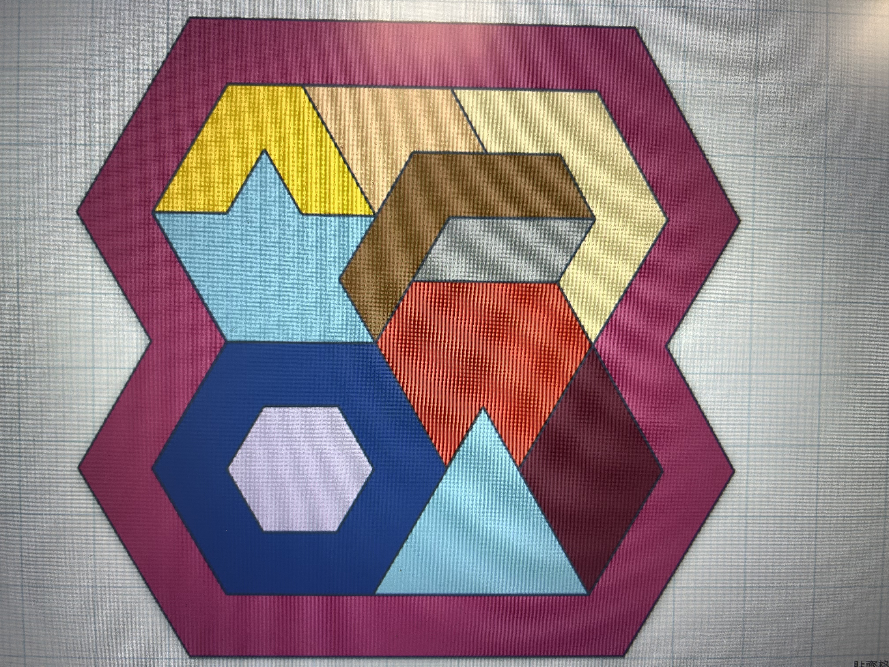

基本資料 :

|
暱稱 : 悠哉的蘋果 性別 : 男 生日 : 2006/10/06 學校 : 國立陽明交通大學 科系 : 資訊工程學系 Instagram : @com101010101 電話 : 0906672292 |
簡單自介 :
大家好，我是陽明交大資訊工程學系的大一生，我的特殊表現是 APCS 拿到 5-5，高中資訊奧林匹亞第 32 名。我的興趣是旅遊、打橋牌。我也很喜歡參加學校的社團活動 (包含清華大學的)。上大學後我的目標是每科都 All Pass 不被當。
各種連結 :
個人專區 :
終極井字遊戲

|
這是我在暑假剛學 HTML 時利用 HTML 與 Python 來完成的終極井字遊戲。一開始我先用 Python 寫好後端，接著利用 HTML 完成前端，然後我用 AI 幫忙整合前後兩端並把完成的專案上傳到 GitHub 上。
終極井字遊戲是一般井字遊戲的進階版，玩家需要在每個小九宮格連線來佔有小九宮格，並把佔有的小九宮格在大九宮格連線才算獲勝。每次能填的位置也是受限的，因此更需要玩家動腦筋思考，選擇最好的位置。 |
KQlator

|
這是我選修 Labview 程式語言時做的第一個專案，是個簡易的計算機，功能如下 : 1.基本加減乘除的功能 2.可以進行括號運算 3.可以儲存兩個運算結果 4.精確度與顯示數值到小數點後六位 5.當使用者輸入不合法的表達式時會報錯 6.可以執行 sqrt() 這個專案我最後拿到了 85 分，製作過程中我也第一次體驗了用新的接線程式語言寫專案以及 Debug 的過程。專案放在 GitHub 上，點擊藍色按鈕就可看到。 |
水岸-森林物與可愛動物園區參訪


|
今年 10/6 時，也就是我的生日那天，我去宜蘭水岸-森林物與可愛動物園區參訪。在那裏有各式各樣的可愛動物，如水豚、笑笑羊、烏龜、梅花鹿、鴨子等動物可供參觀、拍照及餵食。現場還有友善的工作人員，完成他們給的任務就可以獲得牧草，獲得的牧草可以繼續餵食動物。我覺得餵食動物很有趣，我在那邊待了兩個半小時以上，最後是飼料餵完，加上園區快要關門，因此我才依依不捨地離開。離開後我還去了羅東夜市吃包心粉圓，真是開開心心的一天啊! |
白晝之夜


|
因為我修了創意城市與永續生態這門課程。老師介紹了「白晝之夜」這個活動，並聲明某項作業與這個活動有關，因此在 11/1 晚上時，我到台北圓山參加「白晝之夜」這個活動。
在「白晝之夜」中，會有許多靜態與動態的展覽、燈光秀、音樂會等。還有許多市集前往圓山擺攤。在活動中，我看到了許多有趣的藝術作品。 令我印象最深刻的作品是一個類似拼湊方塊的展覽，那一區有很多奇形怪狀的方塊可以給我們市民自由組合。當時就有很多小朋友在那裡玩。我當天就把幾個方塊拼成一個類似石像的東西。這讓我瞭解了展覽不一定要靜態的，可以是動態的。透過市民與展覽品的互動，反而能展出各式各樣的酷東西。 |
自造者社雷切作品
|
 |
我上大一的時候，我的目標之一就是要參加許多課外活動與社團。因此雖然我是交大的學生，但因為我想體驗看看手作小物與雷切，於是我參加了清大自造者社。
在某次社課中，學長姐們帶我們做雷切創意拼圖，每個社員可以自己用 3D 軟體繪製想要的拼圖造型，並進行一系列的軟體操作，之後在預約時間到享印工坊雷切。我的心得是雷切完後我發現我做出來的拼圖太難了，基本上沒有看答案要拼兩小時都很難拼出來。因此這堂課不但讓我體驗到了 3D 建模軟體操作與雷切，也讓我花很多腦袋去解我做出來的創意拼圖成品。 |
Scratch 模擬賽馬場
|
這是我在 2023 年年底的時候用 Scratch 完成的賽馬場程式。當初因為我對賽馬比賽預測與結果有興趣，因此我就寫了賽馬場這份程式。程式主要是模擬五匹馬以不同且隨時間變化的速度跑向終點，第一個到的那匹馬獲勝。
可惜的是因為過了很久所以檔案不見了。所以無法上傳 GitHub，也無法再次存取檔案。我認為可以改進的地方是可增加更多匹馬，能讓畫面更有趣且預測的選擇更多樣化。也可以讓地圖隨著馬跑起來而移動，這樣才更能製造出馬奔跑的效果。目前預計找個時間用 HTML 再寫一次，並完成更多的功能。 |
新竹市立動物園參訪


|
我在大一開學當周的周末就花時間逛新竹附近的景點，包括新竹市立動物園與巨城。其中我對新竹市立動物園比較有印象。到了新竹市立動物園後，我就先去旁邊小吃店吃。在小吃店就可以隔著窗看到動物，只可惜小吃店的食物有點昂貴，我只點了一些食物就付了 380 元。
吃飽飯後，我就進去新竹市立動物園參觀了。相較於台北市立動物園，新竹市立動物園小很多，只有一些動物。那天我看到了鴯鶓、河馬、鴕鳥、梅花鹿、馬來熊等動物。令我印象深刻的是狐蒙區，動物區內有三個小洞可以進去拍照。我覺得這是一個很棒的體驗，可惜因為我有點 i，不好意思放上來，就沒有呈現給大家看。 |